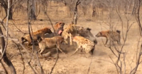

Behaviour and ecology
Lions spend much of their time resting; they are inactive for about twenty hours per day. Although lions can be active at any time, their activity generally peaks after dusk with a period of socialising, grooming and defecating. Intermittent bursts of activity continue until dawn, when hunting most often takes place. They spend an average of two hours a day walking and fifty minutes eating.
Group organisation


The lion is the most social of all wild felid species, living in groups of related individuals with their offspring. Such a group is called a "pride". Groups of male lions are called "coalitions". Females form the stable social unit in a pride and do not tolerate outside females. Membership changes only with the births and deaths of lionesses, although some females leave and become nomadic. The average pride consists of around 15 lions, including several adult females and up to four males and their cubs of both sexes. Large prides, consisting of up to 30 individuals, have been observed. The sole exception to this pattern is the Tsavo lion pride that always has just one adult male. Male cubs are excluded from their maternal pride when they reach maturity at around two or three years of age.
Some lions are "nomads" that range widely and move around sporadically, either in pairs or alone. Pairs are more frequent among related males who have been excluded from their birth pride. A lion may switch lifestyles; nomads can become residents and vice versa.Interactions between prides and nomads tend to be hostile, although pride females in estrus allow nomadic males to approach them. Males spend years in a nomadic phase before gaining residence in a pride. A study undertaken in the Serengeti National Park revealed that nomadic coalitions gain residency at between 3.5 and 7.3 years of age. In Kruger National Park, dispersing male lions move more than 25 km (16 mi) away from their natal pride in search of their own territory. Female lions stay closer to their natal pride. Therefore, female lions in an area are more closely related to each other than male lions in the same area.
The area occupied by a pride is called a "pride area" whereas that occupied by a nomad is a "range". Males associated with a pride tend to stay on the fringes, patrolling their territory. The reasons for the development of sociality in lionesses—the most pronounced in any cat species—are the subject of much debate. Increased hunting success appears to be an obvious reason, but this is uncertain upon examination; coordinated hunting allows for more successful predation but also ensures non-hunting members reduce per capita calorific intake. Some females, however, take a role raising cubs that may be left alone for extended periods. Members of the pride tend to regularly play the same role in hunts and hone their skills. The health of the hunters is the primary need for the survival of the pride; hunters are the first to consume the prey at the site it is taken. Other benefits include possible kin selection; sharing food within the family; protecting the young, maintaining territory and individual insurance against injury and hunger.
Both males and females defend the pride against intruders, but the male lion is better-suited for this purpose due to its stockier, more powerful build. Some individuals consistently lead the defence against intruders, while others lag behind. Lions tend to assume specific roles in the pride; slower-moving individuals may provide other valuable services to the group. Alternatively, there may be rewards associated with being a leader that fends off intruders; the rank of lionesses in the pride is reflected in these responses. The male or males associated with the pride must defend their relationship with the pride from outside males who may attempt to usurp them.
Asiatic lion prides differ in group composition. Male Asiatic lions are solitary or associate with up to three males, forming a loose pride while females associate with up to 12 other females, forming a stronger pride together with their cubs. Female and male lions associate only when mating. Coalitions of males hold territory for a longer time than single lions. Males in coalitions of three or four individuals exhibit a pronounced hierarchy, in which one male dominates the others and mates more frequently.
Hunting and diet


The lion is a generalist hypercarnivoreand is considered to be both an apex and keystone predator due to its wide prey spectrum.Its prey consists mainly of mammals, particularly ungulates weighing 190–550 kg (420–1,210 lb) with a preference for blue wildebeest, plains zebra, African buffalo, gemsbok and giraffe. Lions also hunt common warthog depending on availability, although the species is below the preferred weight range. In India, sambar deer and chital are the most commonly recorded wild prey, while domestic livestock may contribute significantly to their diet. They usually avoid fully grown adult elephants, rhinoceroses and hippopotamus and small prey like dik-dik, hyrax, hare and monkey. Unusual prey include porcupines and small reptiles. Lions kill other predators such as leopard, cheetah and spotted hyena but seldom consume them.
Young lions first display stalking behaviour at around three months of age, although they do not participate in hunting until they are almost a year old and begin to hunt effectively when nearing the age of two. Single lions are capable of bringing down zebra and wildebeest, while larger prey like buffalo and giraffe are riskier. In Chobe National Park, large prides have been observed hunting African bush elephants up to around 15 years old in exceptional cases, with the victims being calves, juveniles, and even subadults. In typical hunts, each lioness has a favoured position in the group, either stalking prey on the "wing", then attacking, or moving a smaller distance in the centre of the group and capturing prey fleeing from other lionesses. Males attached to prides do not usually participate in group hunting. Some evidence suggests, however, that males are just as successful as females; they are typically solo hunters who ambush prey in small bushland.
Lions are not particularly known for their stamina; for instance, a lioness' heart comprises only 0.57% of her body weight and a male's is about 0.45% of his body weight, whereas a hyena's heart comprises almost 1% of its body weight.Thus, lions run quickly only in short bursts and need to be close to their prey before starting the attack. They take advantage of factors that reduce visibility; many kills take place near some form of cover or at night. The lion's attack is short and powerful; they attempt to catch prey with a fast rush and final leap. They usually pull it down by the rump and kill by a strangling bite to the throat. They also kill prey by enclosing its mouth and nostrils in their jaws.
Lions typically consume prey at the location of the hunt but sometimes drag large prey into cover. They tend to squabble over kills, particularly the males. Cubs suffer most when food is scarce but otherwise all pride members eat their fill, including old and crippled lions, which can live on leftovers. Large kills are shared more widely among pride members. An adult lioness requires an average of about 5 kg (11 lb) of meat per day while males require about 7 kg (15 lb). Lions gorge themselves and eat up to 30 kg (66 lb) in one session; if it is unable to consume all of the kill, it rests for a few hours before continuing to eat. On hot days, the pride retreats to shade with one or two males standing guard.Lions defend their kills from scavengers such as vultures and hyenas.
Lions scavenge on carrion when the opportunity arises; they scavenge animals dead from natural causes such as disease or those that were killed by other predators. Scavenging lions keep a constant lookout for circling vultures, which indicate the death or distress of an animal. Most carrion on which both hyenas and lions feed upon are killed by hyenas rather than lions.Carrion is thought to provide a large part of lion diet.
Predator competition

Lions and spotted hyenas occupy a similar ecological niche and where they coexist they compete for prey and carrion; a review of data across several studies indicates a dietary overlap of 58.6%. Lions typically ignore spotted hyenas unless the lions are on a kill or are being harassed by the hyenas, while the latter tend to visibly react to the presence of lions, with or without the presence of food. Lions seize the kills of spotted hyenas; in the Ngorongoro crater it is common for lions to subsist largely on kills stolen from hyenas, causing the hyenas to increase their kill rate. In Botswana's Chobe National Park, the situation is reversed; hyenas frequently challenge lions and steal their kills, obtaining food from 63% of all lion kills. When confronted on a kill by lions, spotted hyenas may either leave or wait patiently at a distance of 30–100 m (100–330 ft) until the lions have finished.
Hyenas are bold enough to feed alongside lions and to force the lions off a kill. The two species attack one another even when there is no food involved for no apparent reason. Lion predation can account for up to 71% of hyena deaths in Etosha National Park. Spotted hyenas have adapted by frequently mobbing lions that enter their territories. When the lion population in Kenya's Masai Mara National Reserve declined, the spotted hyena population increased rapidly. Experiments on captive spotted hyenas show that specimens without prior experience with lions act indifferently to the sight of them, but will react fearfully to lion scent.
Lions tend to dominate cheetahs and leopards, steal their kills and kill their cubs and even adults when given the chance.Cheetahs in particular often lose their kills to lions or other predators. A study in the Serengeti ecosystem revealed that lions killed at least 17 of 125 cheetah cubs born between 1987 and 1990. Cheetahs avoid their competitors by using different temporal and habitat niches. Leopards are able to take refuge in trees; lionesses, however, occasionally attempt to climb up and retrieve leopard kills from that height.
Lions similarly dominate African wild dogs, taking their kills and preying on young and rarely adult dogs. Population densities of wild dogs are low in areas where lions are more abundant. However, there are a few reported cases of old and wounded lions falling prey to wild dogs. Lions also charge at Nile crocodiles; depending on the size of the crocodile and the lion, either animal can lose their kills to the other. Lions have been observed killing crocodiles that ventured onto land. Crocodiles may also kill and eat lions, evidenced by the occasional lion claw found in crocodile stomachs.
Reproduction and life cycle


Most lionesses reproduce by the time they are four years of age. Lions do not mate at a specific time of year and the females are polyestrous. Like those of other cats, the male lion's penis has spines that point backward. During withdrawal of the penis, the spines rake the walls of the female's vagina, which may cause ovulation. A lioness may mate with more than one male when she is in heat. Generation length of the lion is about seven years. The average gestation period is around 110 days; the female gives birth to a litter of between one and four cubs in a secluded den, which may be a thicket, a reed-bed, a cave, or some other sheltered area, usually away from the pride. She will often hunt alone while the cubs are still helpless, staying relatively close to the den. Lion cubs are born blind; their eyes open around seven days after birth. They weigh 1.2–2.1 kg (2.6–4.6 lb) at birth and are almost helpless, beginning to crawl a day or two after birth and walking around three weeks of age. To avoid a buildup of scent attracting the attention of predators, the lioness moves her cubs to a new den site several times a month, carrying them one-by-one by the nape of the neck.
Usually, the mother does not integrate herself and her cubs back into the pride until the cubs are six to eight weeks old. Sometimes the introduction to pride life occurs earlier, particularly if other lionesses have given birth at about the same time. When first introduced to the rest of the pride, lion cubs lack confidence when confronted with adults other than their mother. They soon begin to immerse themselves in the pride life, however, playing among themselves or attempting to initiate play with the adults. Lionesses with cubs of their own are more likely to be tolerant of another lioness's cubs than lionesses without cubs. Male tolerance of the cubs varies—one male could patiently let the cubs play with his tail or his mane, while another may snarl and bat the cubs away.
Pride lionesses often synchronise their reproductive cycles and communal rearing and suckling of the young, which suckle indiscriminately from any or all of the nursing females in the pride. The synchronisation of births is advantageous because the cubs grow to being roughly the same size and have an equal chance of survival, and sucklings are not dominated by older cubs. Weaning occurs after six or seven months. Male lions reach maturity at about three years of age and at four to five years are capable of challenging and displacing adult males associated with another pride. They begin to age and weaken at between 10 and 15 years of age at the latest.
When one or more new males oust the previous males associated with a pride, the victors often kill any existing young cubs, perhaps because females do not become fertile and receptive until their cubs mature or die. Females often fiercely defend their cubs from a usurping male but are rarely successful unless a group of three or four mothers within a pride join forces against the male. Cubs also die from starvation and abandonment, and predation by leopards, hyenas and wild dogs. Up to 80% of lion cubs will die before the age of two. Both male and female lions may be ousted from prides to become nomads, although most females usually remain with their birth pride. When a pride becomes too large, however, the youngest generation of female cubs may be forced to leave to find their own territory. When a new male lion takes over a pride, adolescents both male and female may be evicted. Lions of both sexes may be involved in group homosexual and courtship activities; males will also head-rub and roll around with each other before simulating sex together.
Health
Although adult lions have no natural predators, evidence suggests most die violently from attacks by humans or other lions. Lions often inflict serious injuries on members of other prides they encounter in territorial disputes or members of the home pride when fighting at a kill. Crippled lions and cubs may fall victim to hyenas and leopards or be trampled by buffalo or elephants. Careless lions may be maimed when hunting prey.
Ticks commonly infest the ears, neck and groin regions of lions. Adult forms of several tapeworm species of the genus Taenia have been isolated from lion intestines, having been ingested as larvae in antelope meat. Lions in the Ngorongoro Crater were afflicted by an outbreak of stable fly (Stomoxys calcitrans) in 1962; this resulted in lions becoming emaciated and covered in bloody, bare patches. Lions sought unsuccessfully to evade the biting flies by climbing trees or crawling into hyena burrows; many died or migrated and the local population dropped from 70 to 15 individuals. A more recent outbreak in 2001 killed six lions.
Captive lions have been infected with canine distemper virus (CDV) since at least the mid 1970s. CDV is spread by domestic dogs and other carnivores; a 1994 outbreak in Serengeti National Park resulted in many lions developing neurological symptoms such as seizures. During the outbreak, several lions died from pneumonia and encephalitis. Feline immunodeficiency virus and lentivirus also affect captive lions.
Communication
When resting, lion socialisation occurs through a number of behaviours; the animal's expressive movements are highly developed. The most common peaceful, tactile gestures are head rubbing and social licking, which have been compared with the role of allogrooming among primates. Head rubbing—nuzzling the forehead, face and neck against another lion—appears to be a form of greeting and is seen often after an animal has been apart from others or after a fight or confrontation. Males tend to rub other males, while cubs and females rub females. Social licking often occurs in tandem with head rubbing; it is generally mutual and the recipient appears to express pleasure. The head and neck are the most common parts of the body licked; this behaviour may have arisen out of utility because lions cannot lick these areas themselves.
Lions have an array of facial expressions and body postures that serve as visual gestures. A common facial expression is the "grimace face" or flehmen response, which a lion makes when sniffing chemical signals and involves an open mouth with bared teeth, raised muzzle, wrinkled nose closed eyes and relaxed ears. Lions also use chemical and visual marking; males will spray and scrape plots of ground and objects within the territory.
The lion's repertoire of vocalisations is large; variations in intensity and pitch appear to be central to communication. Most lion vocalisations are variations of growling, snarling, meowing and roaring. Other sounds produced include purring, puffing, bleating and humming. Roaring is used to advertise its presence. Lions most often roar at night, a sound that can be heard from a distance of 8 kilometres (5 mi). They tend to roar in a very characteristic manner starting with a few deep, long roars that subside into a series of shorter ones.